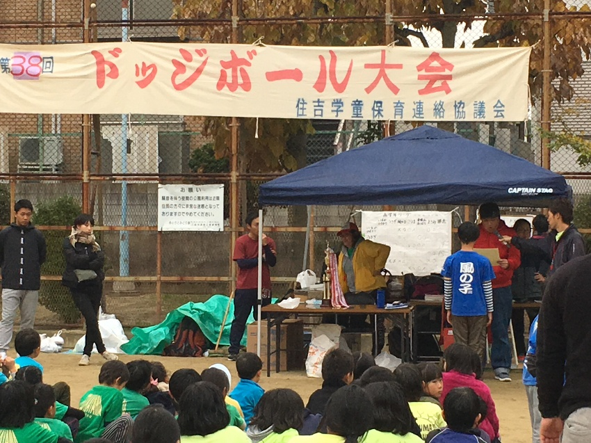
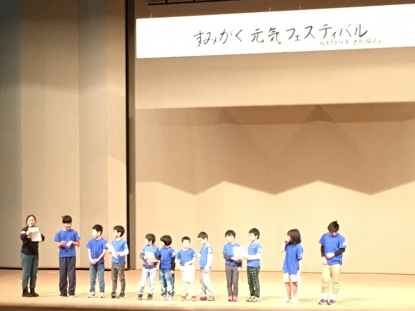
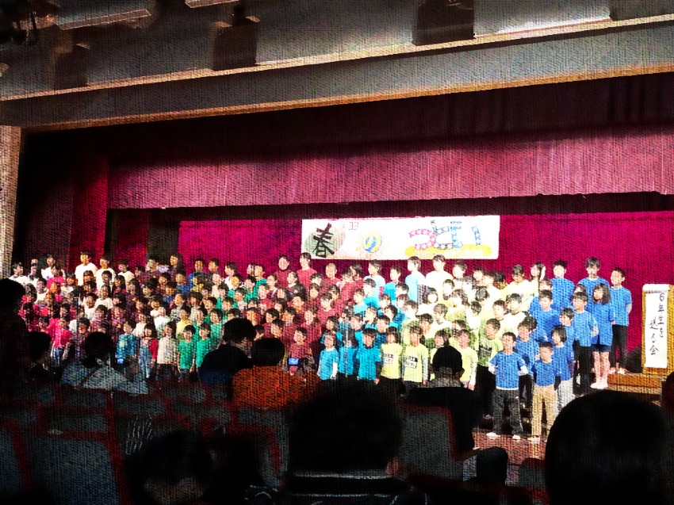
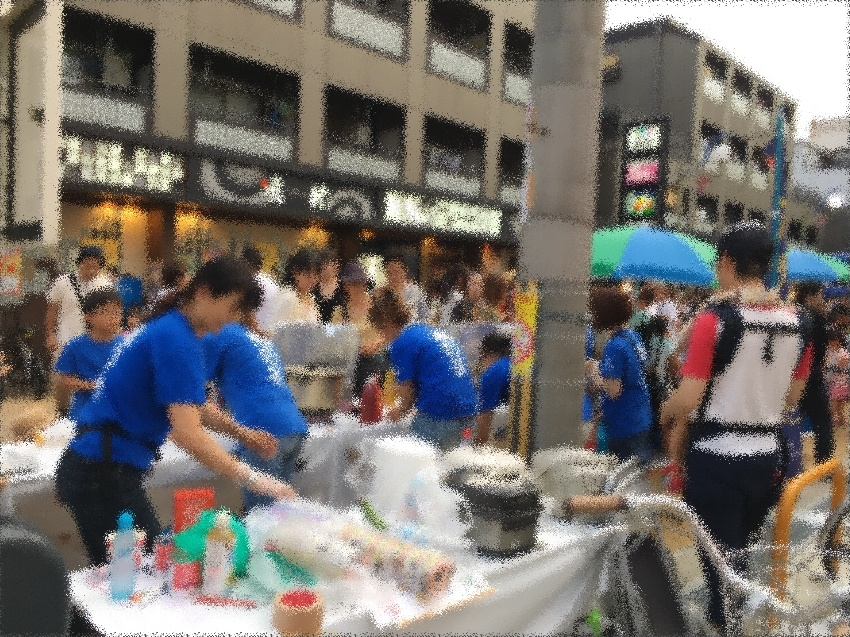
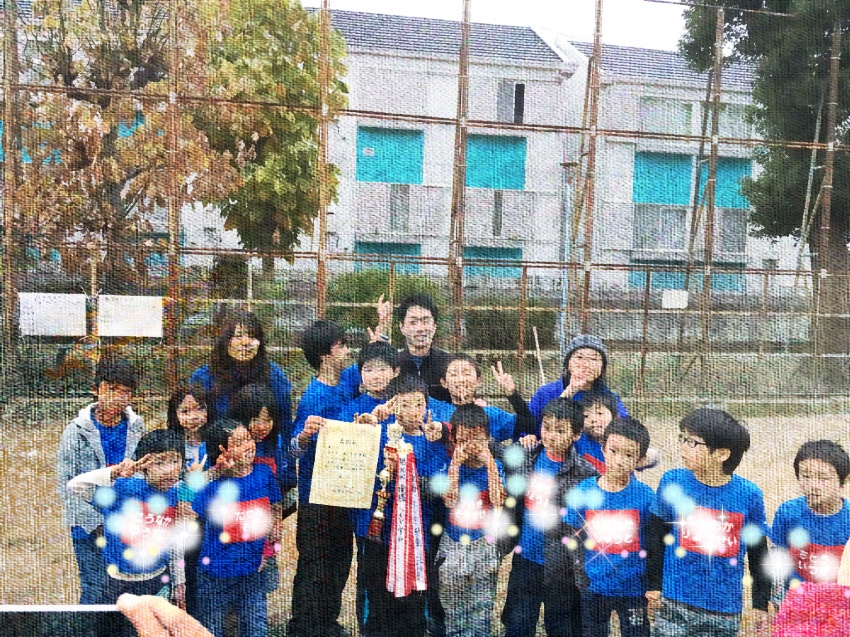

出会いの春
- 卒入所式
- 春のつどい
新しい仲間を迎え、卒所する仲間を送る行事が掲載されています。
SEASONS & EVENTS
過去のサイトで紹介されている行事を、見やすく整理しました。現在の年間予定表ではありません。
 既存サイト掲載写真
既存サイト掲載写真SEASONAL ALBUM
新しい仲間を迎え、卒所する仲間を送る行事が掲載されています。
地域のお祭りやキャンプの記録があります。移転先には8月のキャンプの紹介もあります。
体を動かす行事の記録があります。移転先には11月のドッジボール大会の記載があります。
手づくりや出し物を楽しむ、過去の活動が紹介されています。
掲載根拠：既存サイト「行事の様子」（外部サイト）↗ ／ 2026年10月21日確認。現行の運用は施設確認待ち。
A LITTLE ADVENTURE
キャンプでは、いつもの部屋を離れて過ごす経験も。既存サイトには川での遊びなど、移転先には食事づくりなどの紹介がありました。
実際の参加にあたっては、行き先、引率体制、宿泊の有無、費用、持ち物などを確認する必要があります。
行事記事のサンプルを見る掲載根拠：移転先サイト「年間行事」（外部サイト）↗ ／ 2026年10月21日確認。現行の運用は施設確認待ち。
KAZENOKO PHOTO ALBUM
既存サイトに掲載されている、実際の過去の活動写真です。






LET’S TALK
見学で確かめたいこと、気になることを整理してみませんか。